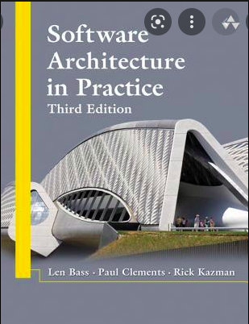
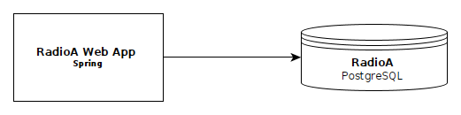
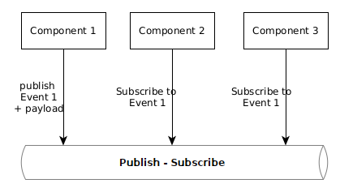
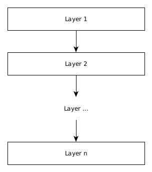

ENRIQUE MOLINARI

¿Qué entendemos por
Arquitectura de Sofware?
Veamos algunas definiciones...
Architecture represents the significant design decisions that shape a system, where significant is measured by cost of change. - Grady Booch (2006).
Architecture represents the significant design decisions that shape a system, where significant is measured by cost of change. - Grady Booch (2006).

The software architecture of a system is the set of structure needed to reason about the system, which comprises software elements, relations among them, and properties of both.
The software architecture of a system is the set of structure needed to reason about the system, which comprises software elements, relations among them, and properties of both.
Software architecture is the art of drawing lines that I call boundaries. Those boundaries separate software elements from one another, and restrict those on one side from knowing about those on the other.
Software architecture is the art of drawing lines that I call boundaries. Those boundaries separate software elements from one another, and restrict those on one side from knowing about those on the other.
Software architecture is the set of design decisions which, if made incorrectly, may cause your project to be cancelled. - Eoin Woods (2010).
Software architecture is the set of design decisions which, if made incorrectly, may cause your project to be cancelled. - Eoin Woods (2010).

Architecture is about the important stuff. Whatever that is. - Ralph Johnson.
Architecture is about the important stuff. Whatever that is. - Ralph Johnson.

La arquitectura de software establece de qué manera un producto de software o sistema está estructurado. La estructura comprende elementos de software, sus propiedades y las relaciones entre ellos.
Cualquier pieza de software que podría ir desde una función, procedimiento, clase, módulo, capa y paquete hasta aplicaciones, repositorios de datos, ambientes de ejecución (web servers, contenedores, etc), API gateways, colas de mensajes, entre otros.
¿Existe la línea donde termina el diseño y comienza la arquitectura?

¿Qué dice la bibliografía sobre esto?
As the size and complexity of software systems increases, the design problem goes beyond the algorithms and data structures of the computation: designing and specifying the overall system structure emerges as a new kind of problem.
System Structural issues includes: protocols for communication, synchronization, and data access; assignment of functionality to design elements; physical distribution; composition of design elements; scaling and performance; and selection among design alternatives. - David Garlan y Mary Shaw (1994)

Si arquitectura es medida en funcion del costo del cambio entonces el lenguaje de programación elegido más las herramientas (frameworks, tool set en general) son decisiones de arquitectura. - Simon Brown (Autor de Software Architecture for Developers)
Si tomamos desiciones técnicas que impactan sobre algún atributo de calidad del sistema entonces son desiciones de arquitectura.
Atributos de Calidad: Modificabilidad, Escalabilidad, Disponibilidad, Monitoriabilidad, Performance, etc.
También conocidos como requerimientos no-funcionales o características de arquitectura.
¿Cómo describimos la arquiectura de un sistema de software?
Existen diferentes Estructuras o Vistas
Dependiendo qué atributo de calidad queremos analizar y a quienes nos dirigimos utilizaremos uno u otro.
Veamos cuales estructuras/vistas sugieren éstos dos autores
Software Engineering Institute (Carnegie Mellon University)
Simon Brown (Consultor Independiente)

Segun SEI, existen 3 categorías de estructuras:
- Módulos: ¿Cómo estructuramos los fuentes?
- Componentes y Conectores: Elementos de Software en ejecución.
- Deployment Físico: Elementos de software deployados en equipos de HW.
El Modelo C4
- Context: ¿Con que otros sistemas interfaceo?
- Container: Web Apps, Client-Side Web Apps, Aplicaciones de consola, bases de datos, file systems, etc.
- Component: ¿Cómo estructuramos los fuentes?
- Code
Módulos (SEI) o Componentes (C4)

C&C (SEI) o Containers (C4)
Deployment Físico v1 (SEI) - En un server

Deployment Físico (SEI) - En dos servers

"Just as good programmers recognized useful data structures in the late 1960s, good software system designers now recognize useful system organizations". - David Garlan and Mary Shaw
¿Qué estilos de arquitectura identificaron Garlan and Shaw por 1994?
Pipes & Filters

Cada componente (filtro) tiene un conjunto de entrada de datos, realiza una transformación y produce una de salida.
Los conectores pueden ser archivos, comunicaciones vía puertos, etc.
Pipes & Filters
Los filtros deben ser independientes: no comparten estado.
Los filtros no estan acoplados entre si, no conocen quien genera su entrada o a quien va dirigida su salida.
Event Based: invocación implícita
En lugar de invocar servicios en forma explícita, un componente, ante ciertos casos de uso, publica un evento que otros componentes pueden o no estar interesados.
Como parte de esa publicación podrían compartirse datos (payload).
Event Based: invocación implícita
Los componentes que publican eventos no conocen qué componentes estan interesados en esos eventos. Tampoco conocen que procesamiento se realiza en otros componentes como resultado de consumir un evento. Alto desacoplamiento.
Layered Systems
Cada capa (layer) consume servicios de la capa inmediatamente inferior. Los componentes pueden ser módulos o elementos en ejecución.
Layered Systems
Los conectores pueden ser invocación de métodos (in-process) o vía port communication (inter-process). No se permite invocar servicios de otras capas que no sean la inmediatamente inferior.
¿Qué tienen en comun éstos estilos?
Definen un conjunto de reglas de arquitectura que como equipo debemos respetar, sin excepciones.
Toda definición de arquitectura impone restricciones o reglas de diseño que debemos respetar para garantizar disciplina y no terminar con un producto de software del tipo big ball of mud.
Otros
- Client - Server: DBMS
- Monoliticos: Microkernel, Modular
- Distributed: SOA, Distributed Monolith, Microservices